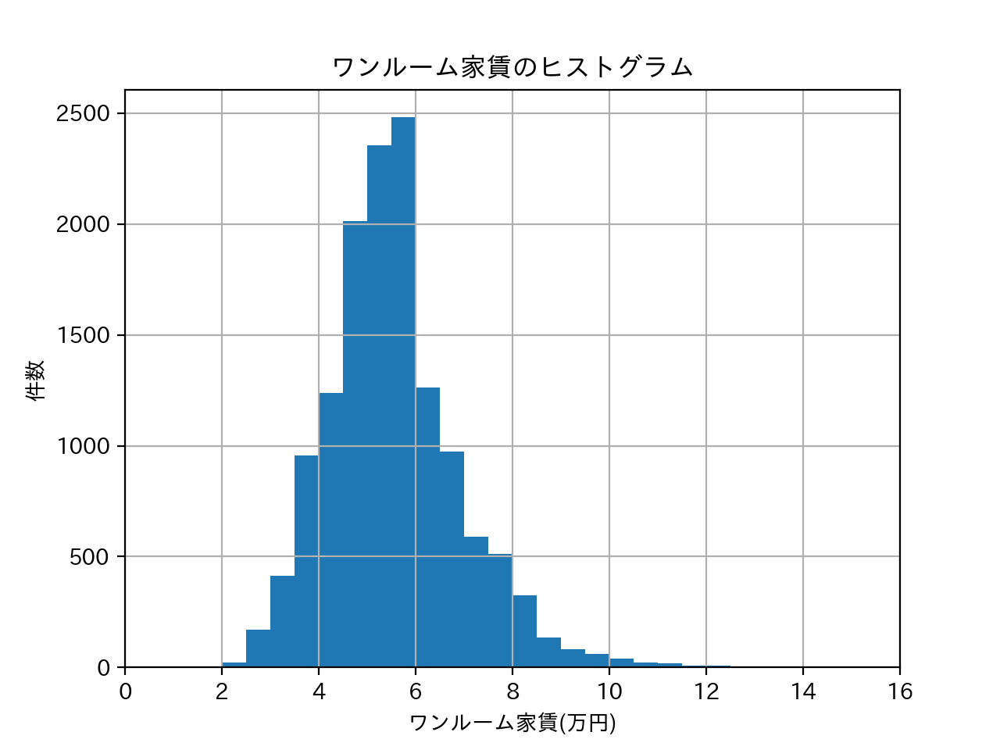

第7回
一人暮らしの家賃
自分が実際に一人暮らしをするとなったら何を一番重宝するか考えてみた。
ワンルーム家賃相場

ワンルームの相場は５〜６万が多いとわかった。
路線ごとの家賃
田園都市線、相鉄本線、ブルーラインは5万円以下の物件も豊富であるとわかった。
家賃を絞った場合の件数
家賃３万〜６万の物件が約10,000件もあるとわかった。
感想
もっと細かい条件をつけて調べたかったがうまく使えずこれ以上のことはできなかった。
技術の面で改善が必要だと感じた。